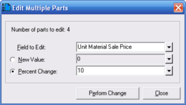

Editing Multiple Parts (Bill of Materials Parts Database Window) |
  
|
Editing Multiple Parts (Bill of Materials Parts Database Window) |
|
To edit multiple parts in the database, first select the parts you want to edit, then click the menu "Part | Edit Part(s)" in the Bill of Materials Parts Database window. Then the Edit Multiple Parts dialog, shown below, will open.

Field to Edit: Specifies the field you want to edit for the selected parts. Click the dropdown help button beside this input to select a different field.
New Value: Select this option if you want to enter a new value for the selected parts, then enter the new value in the text input to the right.
Percent Change: Select this option if you want to increase or decrease the field value by a certain percentage. You can enter a positive or negative value. This input is only available if you selected a field related to cost, price or labor hours in the Field to Edit input.
Perform Change: Updates the selected parts records in the database with the change you specified. Changes are immediately shown in the grid behind this dialog. After performing one change, you may either edit a different field for the selected parts or click the Close button to close this dialog.
Close: Closes this dialog without making any further changes.